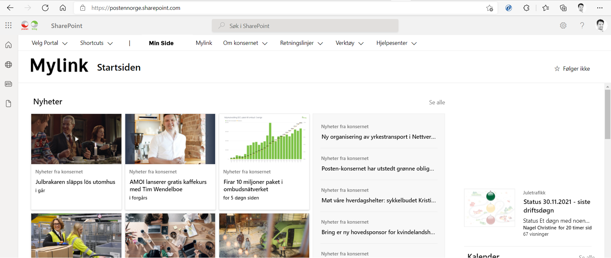
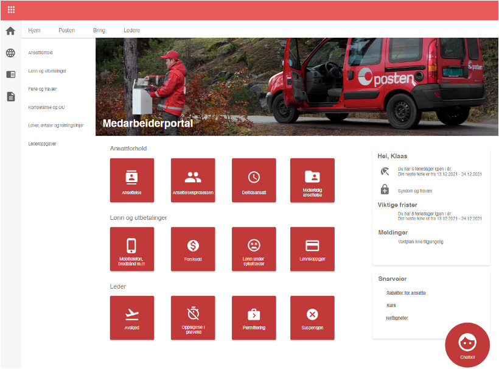
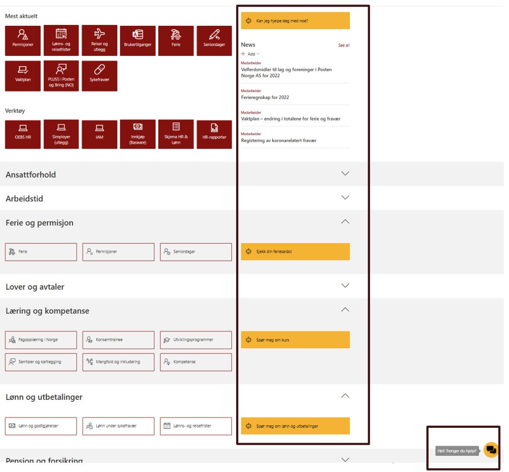
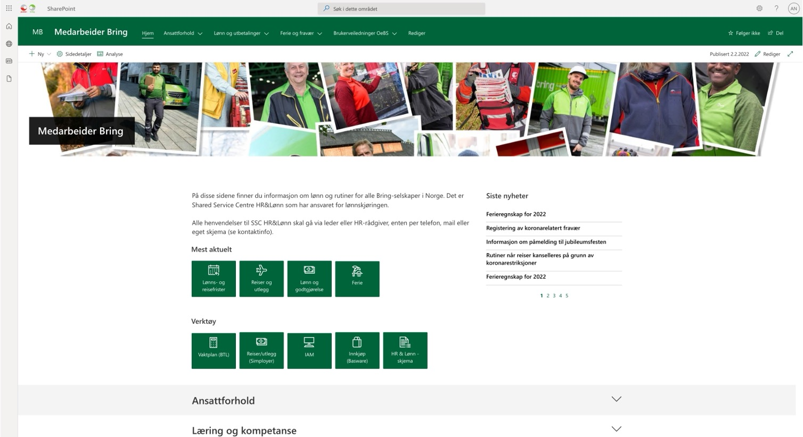

Posten and Bring Norway
Posten Norge's 8,000+ employees had no single place to find information about their employment. I was brought in to design a new employee portal and an AI-powered internal chatbot to fix that.
The Challenge
Around a third of Posten's employees had no email address and no digital connection to the company. They depended entirely on what their manager chose to pass on — which meant the quality of information a worker received depended on who their manager was.
For those who did have access, the existing intranet was described by multiple users as a "jungle." Content was scattered, rarely updated, and hard to navigate. Even experienced managers said they rarely looked past the front page.
HR ended up answering hundreds of questions every week that didn't really need a human to answer. Questions about holiday rules, absence codes, payroll — things that should have been easy to look up.
My Role and Contributions
I joined the project in its later stages, after the main research had already been conducted. A substantial body of material was handed over to me, 49 interviews across nine cities in three countries, six years of HR support ticket data, and intranet usage analytics. My first task was to synthesise all of it together with the leadership team and turn it into a clear picture of what the product needed to do.
From there I led the UX work through to launch and designing the information architecture for the new portal, the conversation flows and intent logic for the chatbot, and implementing the designs in the platform itself.
Process
I built the visual language of Pieces from scratch: logo, art direction, posters, flyers, and social media assets. The Instagram presence drew on chess through the lens of pop culture, music, and memes, becoming as much a cultural archive as a promotional tool and growing the community to nearly 10,000 followers. This extended into merch production, designing physical products that carried the brand identity off-screen and into the community.
Mylink (before)
The existing intranet. News-heavy and hard to navigate. Employees looking for practical HR information had to know where to look before they could find anything.

Early prototype
An early concept exploring a task-based structure. The shift from news-first to task-first grouping content around what employees actually needed to do was the core design decision.

Posten final
The finished Posten portal. Built on SharePoint, structured around tasks rather than topics, with the chatbot embedded directly on the front page.

Posten portal detail
A closer view of the task structure in action. Quick links, tools, and HR categories — all organised around real employee needs identified in the research synthesis.

Bring final
The Bring version of the portal, rolled out to employees in Norway. Same underlying structure, adapted to Bring's brand and the specific needs of that workforce.

Impact
The portal was rolled out to all employees across Posten and Bring giving thousands of workers access to a unified source of HR information for the first time. For the third of the workforce with no digital connection to the company, it meant their managers now had somewhere reliable to go on their behalf.
I left the project before the chatbot had been live long enough to draw conclusions from. But user testing gave strong early indications that it worked the way it was intended to, resolving common questions without needing to involve HR.
Reflections
The most valuable part of this project was the synthesis phase. Being handed a large body of research and making sense of it, together with a leadership team with their own views, is harder than it sounds. You have to understand what was found, why it matters, and make the case for it without having been in the room yourself.
It taught me a lot about working with research you didn't collect. The temptation is either to take it at face value or dismiss it because it isn't yours. The more useful approach is somewhere in between, interrogating it honestly and building on it.
Another important thing I took from this project is how easy it is to design a digital product that works well for people who are already comfortable with digital products. The harder and more interesting problem is designing for everyone else. A third of Posten's workforce had no digital connection to the company at all. Keeping those people in mind throughout every design decision, even when it would have been easier to just design for the users already online, felt like the most important thing I could do.